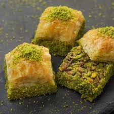

Evde kendiniz hazırlayabileceğiniz kat kat nefis Antep fıstıklı baklava tarifi.
Tarif: Anonim
Kac Kisilik: 4 Kisilik Hazirlama Suresi: 100 dakika Pisirme Suresi: 40 dakika
Toz şeker ve suyu bir tencereye alın. Orta ateşte şeker eriyinceye kadar karıştırın ve kaynamaya bırakın. Kaynamaya başlayınca limon suyunu ekleyip ocağı kısın ve 10 dakika kaynatın. Ocaktan alın ve soğumaya bırakın.
Un ve hamur kabartma tozunu karıştırıp bir kaba eleyin. Üzerine yumurta, su, süt, sıvı yağ, sirke ve tuzu ilave edip yoğurun. Hamurun üzerini kapatın ve 20 dakika dinlendirin.
Hamuru cevizden daha küçük 30 adet parçaya bölün. Her parçayı top şeklinde yuvarlayın. Nişasta serptiğiniz tezgah üzerinde her bir topu 14-15 cm çapında açın. Açtığınız hamurlardan 5 adedini, aralara nişasta serperek üst üste koyun. Her biri 5 hamurdan oluşan 6 grup yapın. İlk beşli hamuru alıp arada nişasta serperek tepsinin boyutunda açın. Tepsiye alın ve üzerine tereyağı sürün. İkinci hamuru aynı şekilde açın, tepsiye alın ve tereyağı sürün. Üçüncü hamuru da aynı şekilde açın. Tepsiye alın, üzerine tereyağı sürün ve Antep fıstığının tamamını yayın. Kalan 3 grup hamuru da aynı şekilde hazırlayıp aralara tereyağı sürerek tepsiye yerleştirin.
Fırından çıkan baklavayı 5 dakika bekletin ve üzerine hazırladığınız soğuk şurubu dökün. 4-5 saat bekletip servis yapın.